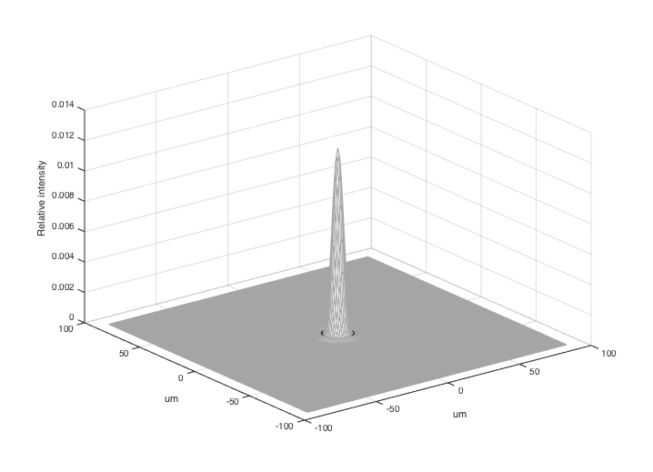

t_opticsPSFPlot
Plot the point spread function (PSF) for diffraction limited optics
This is the implementation that generates the point spread function (PSF) from diffraction limited optics. The code here is embedded in plotOI/OTF.
Copyright ImagEval Consultants, LLC, 2012.
Contents
- Initialize. Not needed, but often convenient.
- Create an optical image and optics with a large f number
- This is the plotOI/OTF code that converts the OTF to PSF conversion
- Oversampling
- Calculate the diffraction limited MTF
- Determine first zero crossing
- Plot the PSF. Zoom and rotate the image to see the details.
- End
Initialize. Not needed, but often convenient.
ieInit;
Create an optical image and optics with a large f number
oi = oiCreate; optics = oiGet(oi,'optics'); % This large is a little blurry fNumber = 12; optics = opticsSet(optics,'fnumber',fNumber); oi = oiSet(oi,'optics',optics);
This is the plotOI/OTF code that converts the OTF to PSF conversion
% Specify units units = 'um'; nSamp = 100; % Number of frequency steps from 0 to incoherent cutoff thisWave = 600; % Get the diffraction limited frequency support val = opticsGet(optics,'dlF Support',thisWave,units,nSamp); clear fSupport [fSupport(:,:,1),fSupport(:,:,2)] = meshgrid(val{1},val{2});
Oversampling
We over sample the frequency to get a smoother PSF image. You can specify the factor for oversampling if you like in the calling arguments to plotOI.
s = 4; fSupport = fSupport*s; % Frequency units are cycles/micron The spatial frequency support runs from % -Nyquist:Nyquist. With this coding, the Nyquist frequency is actually the % peak frequency value. There are two samples per Nyquist, so the sample % spacing is 1/(2*peakF) deltaSpace = 1/(2*max(fSupport(:)));
Calculate the diffraction limited MTF
otf = dlMTF(oi,fSupport,thisWave,units);
psf = fftshift(ifft2(otf));
samp = (-nSamp:(nSamp-1));
[X,Y] = meshgrid(samp,samp);
clear sSupport
sSupport(:,:,1) = X*deltaSpace;
sSupport(:,:,2) = Y*deltaSpace;
Determine first zero crossing
fNumber = opticsGet(optics,'f number'); radius = (2.44*fNumber*thisWave*10^-9)/2 * ieUnitScaleFactor(units); [adX,adY,adZ] = ieShape('circle',200,radius); x = sSupport(:,:,1); y = sSupport(:,:,2);
Plot the PSF. Zoom and rotate the image to see the details.
vcNewGraphWin; mesh(x,y,psf); % For the diffraction limited case, we draw the Airy disk hold on; plot3(adX,adY,adZ,'k.'); hold off; mp = ones(256,3)*0.3; colormap(0.5*mp + 0.5*ones(size(mp))) xlabel('um'); ylabel('um'); zlabel('Relative intensity');